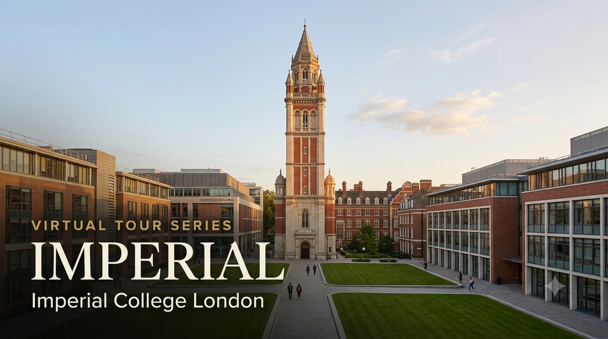

University Spotlight: Imperial College London — Virtual Tour Guide

I'm delighted to share the third edition of the University Virtual Tour Series — a curated resource to help your child explore some of the world's leading universities from the comfort of home. Imperial College London is a specialist university dedicated entirely to science, engineering, medicine, and business. Students from both the CBSE and Cambridge programmes will find this resource relevant — Imperial accepts both qualifications.
I strongly recommend that parents of Grade 9 and above students make the time to visit at least one university — Imperial, a local university in India, or any institution of your choice. A physical visit gives your child something no virtual tour can replicate: they will see the infrastructure and facilities with their own eyes, observe how professors engage with students in live classrooms, and most importantly, spend time talking to existing students about their day-to-day experience. These conversations almost always leave a lasting impression and help students make more grounded, confident decisions about their future. If you'd like guidance planning a visit, feel free to get in touch.
Imperial Admission Requirements — CBSE and Cambridge A Level
The table below summarises what Imperial officially requires for students applying through each pathway. Course-specific subject requirements for Engineering, Computing, Physics, and Medicine vary — feel free to reach out for a one-on-one session.
| Requirement | CBSE Grade 12 | Cambridge A Level |
|---|---|---|
| Qualification | Indian Standard 12 — CBSE Board (All India Senior School Certificate) | Cambridge International AS & A Level; also Edexcel, AQA, OCR International A Level |
| Typical Offer — Science/Engineering | 85–90%+ aggregate in top 5 subjects; high marks in relevant science subjects critical | A*AA or AAA depending on programme; A* usually required in Mathematics for Engineering and Computing |
| Typical Offer — Medicine (MBBS) | CBSE not typically accepted for Medicine — A Level equivalent required; BMAT may be required | A*AA including Chemistry and Biology; UCAT score required; interview (MMI) required |
| English Proficiency — IELTS | Overall 6.5, no component below 6.0 (standard); some programmes require 7.0 overall | IELTS waived for Cambridge A Level students who studied in English — confirm with the department |
| Application Portal | UCAS (ucas.com) — same portal used by all UK university applicants | UCAS — same portal |
| UCAS Deadline | 15 January (UK entry year following the application) | 15 January — same deadline |
| Personal Statement | 4,000 characters — subject-focused; must demonstrate genuine academic interest | Same character limit and format via UCAS |
| Reference | One academic reference submitted via UCAS; must be from a school teacher or counsellor | Same |
| Subject Prerequisites | Vary by course — e.g., Mathematics + Physics required for Engineering; Mathematics + Chemistry for Chemical Engineering | Vary by course — A Level Mathematics + Physics/Chemistry/Biology required depending on programme |
| Admissions Tests | Engineering: ENGAA or PAT (Physics Aptitude Test) required for some programmes from 2026; Computing: TMUA from 2026 | Same — all applicants take the same tests regardless of qualification |
Imperial applies through UCAS — the same portal used for all UK universities. The UCAS deadline for Imperial is 15 January. Students can apply to a maximum of 5 universities through UCAS in total. Imperial's Personal Statement is subject-specific — it should reflect deep genuine interest in the discipline, not a general academic profile. Unlike some US universities, Imperial does not offer Early Action or Early Decision — all applications are reviewed from the same deadline.
Voices from Imperial — Indian Students and Alumni
"Imperial is really close to the heart of London, and being in South Kensington you have the Natural History Museum, the Victoria and Albert Museum, and the Science Museum all within walking distance. It's a rich environment for learning."
— Siddharth Iyer, India, MEng Electrical and Electronic Engineering, Imperial College London
"The research opportunities at Imperial are unlike anything I encountered elsewhere. From my first year, I was working alongside PhD students in the lab."
— Priya Raghunathan, India, MSc Biomedical Engineering, Imperial College London
Why Should Your Child Consider Imperial?
1. QS #2 Globally, #1 in the UK — For Science and Engineering
Imperial College London is ranked #2 globally in the QS World University Rankings 2027, released on 18 June 2026 — tied with Stanford, and sharing the rank that places it above every other UK institution for STEM disciplines. Imperial has consistently ranked in the global top 10 for Engineering and Technology, Physical Sciences, Life Sciences, and Computer Science. For a student seeking a science or engineering degree, it represents one of the two or three strongest academic credentials available anywhere in the world.
2. Location — South Kensington, London
Imperial's main campus occupies South Kensington — one of London's most distinguished addresses, surrounded by world-class museums, the Royal Albert Hall, and Kensington Gardens. London is a truly global city: with over 300,000 Indian-origin residents, a vibrant Indian community, direct flights from Chennai, and one of the world's most connected professional networks. Students at Imperial are not just studying in a great city — they are studying at the intersection of academia and global industry, steps from the firms that recruit them.
3. Specialist Focus — Science, Engineering, Medicine, and Business Only
Unlike Oxford, Cambridge, or UCL, Imperial is a specialist university. Every student, every professor, and every research initiative is focused on STEM and business. This creates an environment of extraordinary depth — the physics student in the same building as the bioengineer, the computing student running experiments alongside the materials scientist. For students who are clear about a STEM direction, this focus is a significant advantage: the curriculum, the staff, the culture, and the career network are all optimised for the same goal.
4. Career Outcomes — Top 10 Globally for Graduate Employability
Imperial ranks among the top 10 universities globally for graduate employability (QS Graduate Employability Rankings 2024). Major recruiters include Google, McKinsey, Goldman Sachs, NHS, Rolls-Royce, Airbus, BP, Shell, and Johnson & Johnson. The Imperial Enterprise Lab and the Innovation Hub give students direct access to startup founders, venture capital, and alumni networks spanning finance, tech, and healthcare. For Indian students, Imperial's brand is particularly well-recognised among Indian multinational companies and global firms with India operations.
What Parents Should Know
- Annual tuition fee for international students: approximately GBP 37,900–47,800 (~INR 40–51 lakhs at ~GBP 107/INR, June 2026) depending on programme; Medicine is higher at approximately GBP 52,000+
- Living costs in London: approximately GBP 12,000–15,000 per year (~INR 13–16 lakhs); accommodation on campus is guaranteed for first-year international students
- The President's Undergraduate Scholarship offers up to GBP 10,000/year to exceptional international students — applied for separately after receiving an offer; highly competitive, not guaranteed
- UK Student visa (Tier 4) required — apply online once you receive the Confirmation of Acceptance for Studies (CAS) from Imperial; biometric appointment at the nearest UK Visa Application Centre in India
- IELTS requirement: CBSE students typically need IELTS 6.5+ overall; Cambridge A Level students are often waived — confirm with the specific department
- Imperial's 90-year alumni network spans 160+ countries; the largest alumni chapters outside the UK include India, the USA, and Singapore — giving Indian graduates immediate professional connections on return
To discuss Imperial admission strategy, UCAS personal statement planning, admissions test preparation (PAT, ENGAA, UCAT), scholarship eligibility, and subject pathway planning for your child, feel free to write to me at pcmadankumar@gmail.com or get in touch via the contact page. I'm happy to set up a one-on-one session at a time convenient for you.
I curate University Virtual Tour resources as part of my commitment to helping students and parents make informed post-secondary decisions. Future editions will continue to spotlight leading universities across major study destinations worldwide, including the UK, USA, Australia, Canada, India, and Singapore.
Best wishes,
Madan Kumar PC
References
- QS World University Rankings 2027 — Imperial #2 globally, #1 UK for STEM (released 18 June 2026). topuniversities.com
- Imperial College London — Undergraduate Entry Requirements for International Students. imperial.ac.uk
- Imperial — English Language Requirements. imperial.ac.uk
- Imperial — Tuition Fees for International Students (2026–2027). imperial.ac.uk
- Imperial — President's Undergraduate Scholarship. imperial.ac.uk
- QS Graduate Employability Rankings 2024. topuniversities.com
- UCAS — How to Apply. ucas.com
- Imperial College London Campus Tour — YouTube. youtube.com